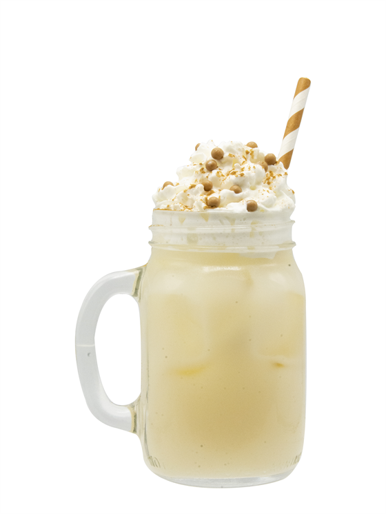

Introducing the Beef Fizz, a bold and unexpected twist on classic mixology. This avant-garde cocktail takes the traditional notions of libations and flips them on their head, blending the rich, savory notes of beef-infused spirits with the effervescence of a sparkling twist. Picture a harmonious dance between the smoky depth of bourbon or rye and the unexpected umami of beef broth, all elevated by the lively fizz of soda water. Served over ice and garnished with a touch of culinary flair, the Beef Fizz is a conversation starter, a taste adventure, and a cocktail experience unlike any other. Unleash your palate and savor the extraordinary with this daring concoction that challenges the boundaries of flavor. Cheers to innovation in every sip!
To master this recipe, you will need a few ingredients. So go grab them at your local Wallmart
Follow the guide:
Et Voilà!
